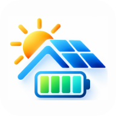
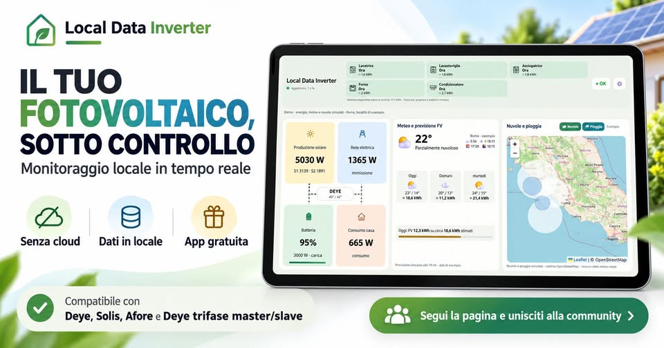
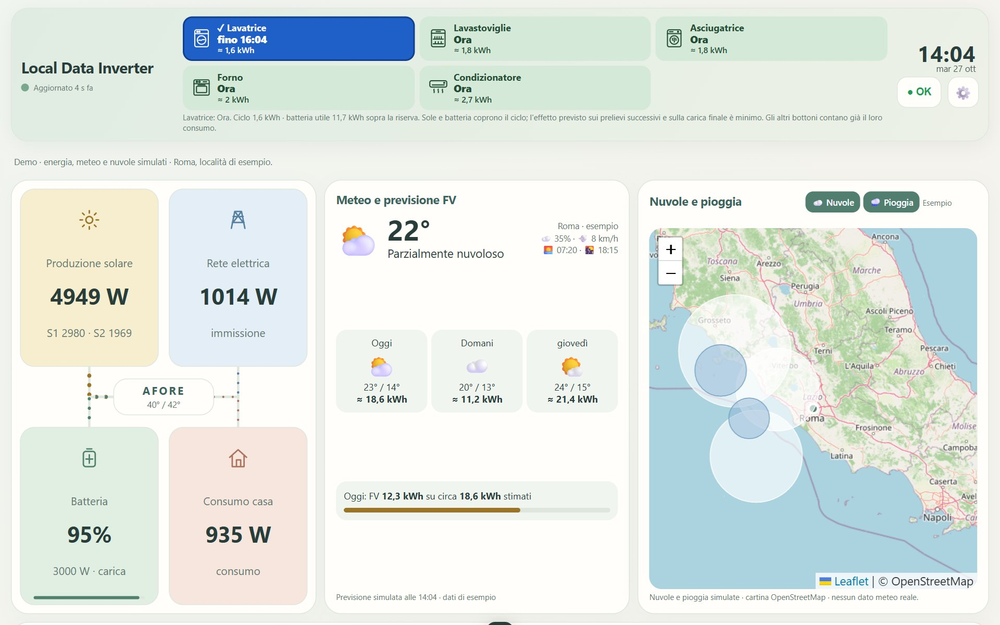
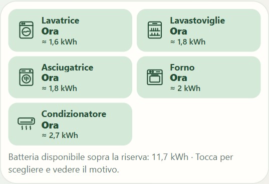
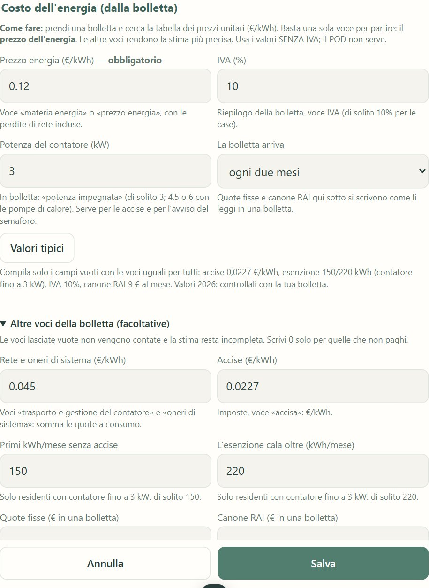
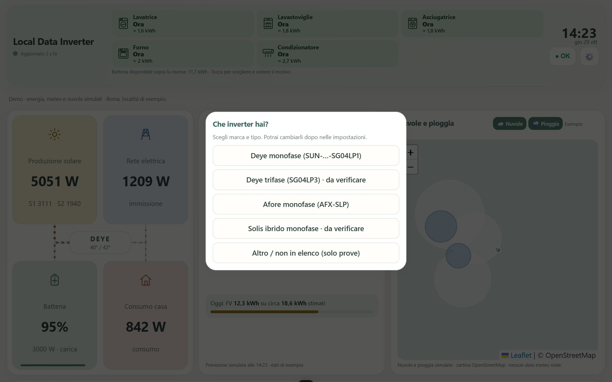

Local Data InverterApp Android gratuita che legge l'inverter direttamente dalla chiavetta Wi-Fi Solarman, in casa. Niente cloud, niente account.
⬇ Scarica l'appVersione 1.15 · Android 7 o più recente · circa 5 MB · come si installa

Pannelli, batteria, rete e casa in un colpo d'occhio, aggiornati ogni pochi secondi. Con il tasto LIVE, un minuto di dati ogni secondo.
Quanto produrrai oggi e domani, con la mappa di nuvole e pioggia.
Ti dice quando accendere lavatrice, forno o lavastoviglie per usare il sole e non la rete.
Stima della spesa e di quanto risparmi, con bolletta mensile o bimestrale.
Dati di oggi, grafici, storico, eventi e allarmi dell'inverter.
Modalità schermo sempre acceso, tema chiaro o scuro, grafica Nuova o Classica.




Le foto sono in modalità demo: dati di esempio, non reali.
Il vostro inverter non è tra i provati? Nell'app scegliete "Altro / non in elenco": la scheda "Esplora la rete" prepara un file da mandare nel gruppo, e con il vostro aiuto si aggiunge il vostro modello.
L'app legge i dati e basta: non manda nessun comando all'inverter e non cambia nessuna impostazione.
Letture distanziate; se la chiavetta non risponde l'app rallenta da sola e riprende appena risponde.
I dati dell'inverter restano sul telefono. Internet serve solo per meteo (Open-Meteo), nuvole (RainViewer, EUMETSAT) e mappe (OpenStreetMap).
Nel gruppo Facebook trovi le nuove versioni, l'aiuto per configurare l'app e i consigli di chi la usa già. Se qualcosa non va, manda uno screenshot, la versione dell'app (in fondo alle impostazioni) e il modello di inverter e telefono.
👥 Entra nel gruppo